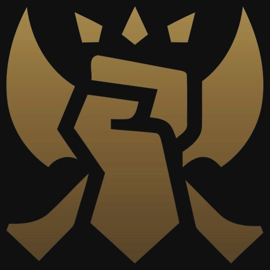
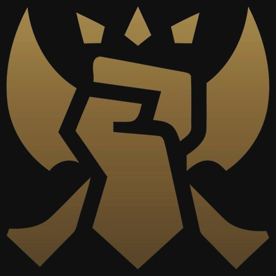
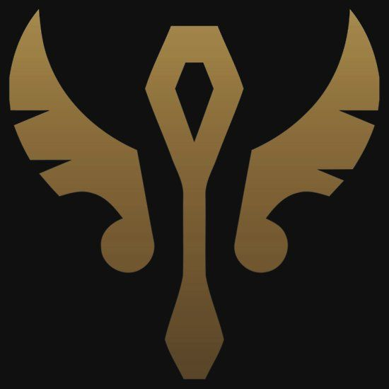
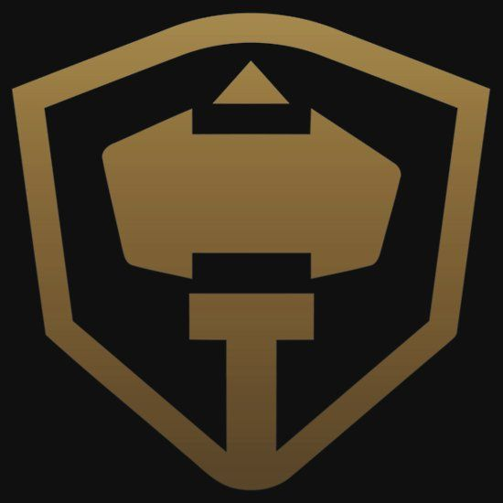
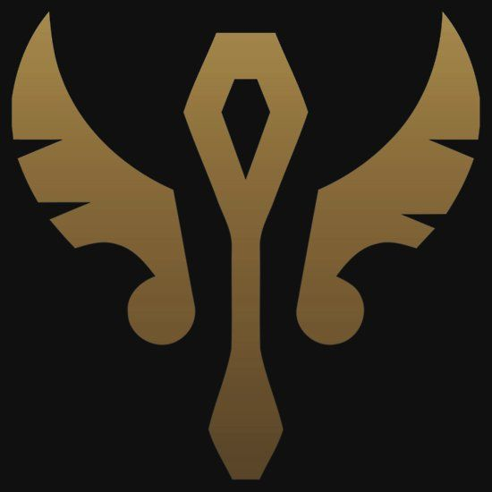
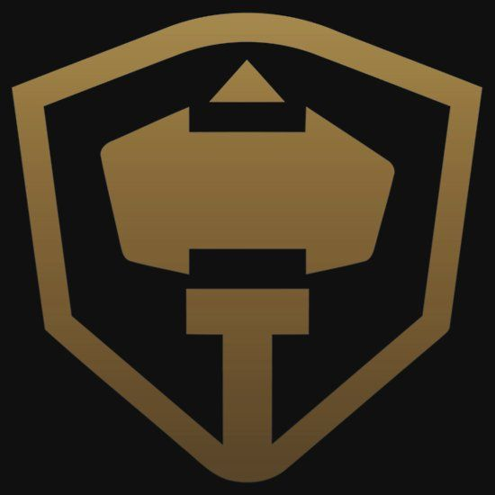

Jelenleg 150 hős áll rendelkezésre. A hősök a játék világában olyan nagy hatalmú egyének,
különbözőféle hatalmi forrásokkal, akiket/amiket az Idéző (a játékos) idéz meg és irányít. Ezek a hősök egyedi képességekkel és játékstílussal
rendelkeznek, de beoszthatók 6 kategóriába:
Orgyilkos: középszintű támadó- és védekezőképességgel rendelkeznek. Lényegük az, hogy magas prioritású, alacsony életerejű célpontokat gyorsan
tudjanak megsemmisíteni.
Harcos: erős támadóerővel és védekezéssel rendelkeznek, viszont általában lassúak. A Harcosok alapértékei igen magasak, ezért a játék elején
kulcsfontosságú a szerepük.
Mágus: főleg távolsági karakterek, nagyon erős támadóerővel, de nagyon gyenge védekezéssel és alaptámadással. Céljuk,
hogy távolról és területre, vagy több játékosra sebezzen.
Lövész (vagy ADC vagy Carry): távolsági karakterek, melyeknek alaptámadása gyors és erős. Leggyakrabban rendelkeznek olyan képességekkel,
amikkel saját értékeiket erősíteni, növelni tudják.
Támogató: gyenge támadó- és védekező képességű karakterek. Céljuk, a csapattársak támogatása, gyógyítással, buffolással, előnyös helyzetek teremtésével
vagy éppen a támadási lehetőségek elkerülésével.
Tank: extrém védekezőképességgel és viszonylag gyenge támadással rendelkeznek és minden Tank rendelkezik valamilyen tömegirányító hatással.
Lényegük, hogy megvédjék a gyengébb karaktereket, fölfogják a támadásokat.
 
 
  
 